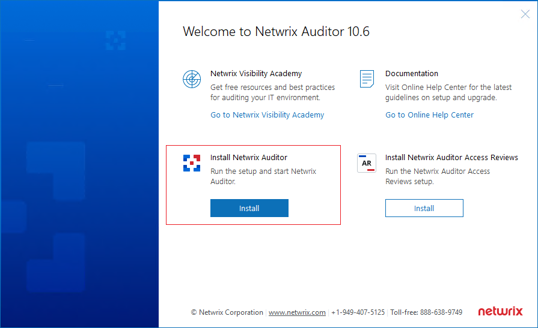

Question
How to repair a Netwrix Auditor installation in our environment?
Answer
IMPORTANT: Before proceeding, run the following command in elevated PowerShell to stop all Netwrix Services and prevent any possible complications during the repair process:
Stop-Service -Displayname Netwrix*
-
Establish the Netwrix Auditor version and build you're currently running in your environment. Refer to the following article for additional information: How to Find Out My Netwrix Auditor Version.
-
Proceed to your My Products page to download the executable for the corresponding version. Refer to the following link: Netwrix — My Products.
-
Run the downloaded executable. Once the files are extracted, a setup screen will be prompted.
 -
Select Install under Install Netwrix Auditor.
-
Click Next, and select Repair.
-
Confirm the selection by clicking Repair.
-
Allow the repair process to complete.
-
Restart your Netwrix Auditor server to complete the repair.